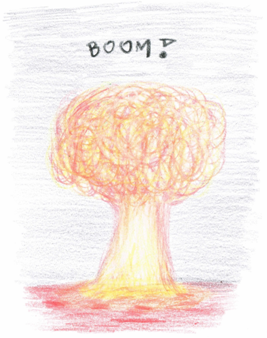
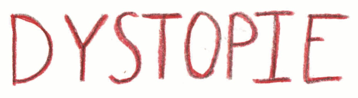

Die Grundidee unseres Projekts zum 68. Europäischen Wettbewerb besteht darin, das Konzept einer Smart City näherzubringen. Dabei präsentieren wir zum einen unsere Vision einer solchen intelligenten Stadt im Jahr 2050 um zu zeigen, welche Möglichkeiten sie bietet. Zum anderen wollen wir auch das exakte Gegenteil darstellen, welches dazu dienen soll, auf die Gefahren aufmerksam zu machen. Technik und Innovation scheinen nämlich erst einmal etwas Gutes zu sein, doch wenn es in falsche Hände gerät, wird es mehr zum Fluch als zum Segen. Daher werden im Folgenden acht Bereiche und ihr mögliches Aussehen thematisiert; einmal im eutopischen und einmal im dystopischen Szenario.
Abschließend lässt sich sagen, dass es sehr von den Menschen abhängt, ob Smart Cities etwas Gutes oder etwas
Schlechtes für die Zukunft bringen. Entweder werden aktuelle gesellschaftlichen Probleme nicht behoben und
dadurch nur vergrößert, oder Smart Cities bringen viele positiven Veränderungen für die Gesellschaft.
So
kann es vor allem durch den staatlichen Missbrauch der neuen Technologien und durch das Ignorieren der
aktuell immer wichtiger werdenden Umwelt dazu führen, dass wir in naher Zukunft schon mit vielen
Konsequenzen zu kämpfen haben.
Die Intention dieses Projekts ist, die aktuellen, bedenklichen
Entwicklungen in unserer Gesellschaft aufzuzeigen und mit zugespitzten Szenarien vor deren Folgen zu warnen.